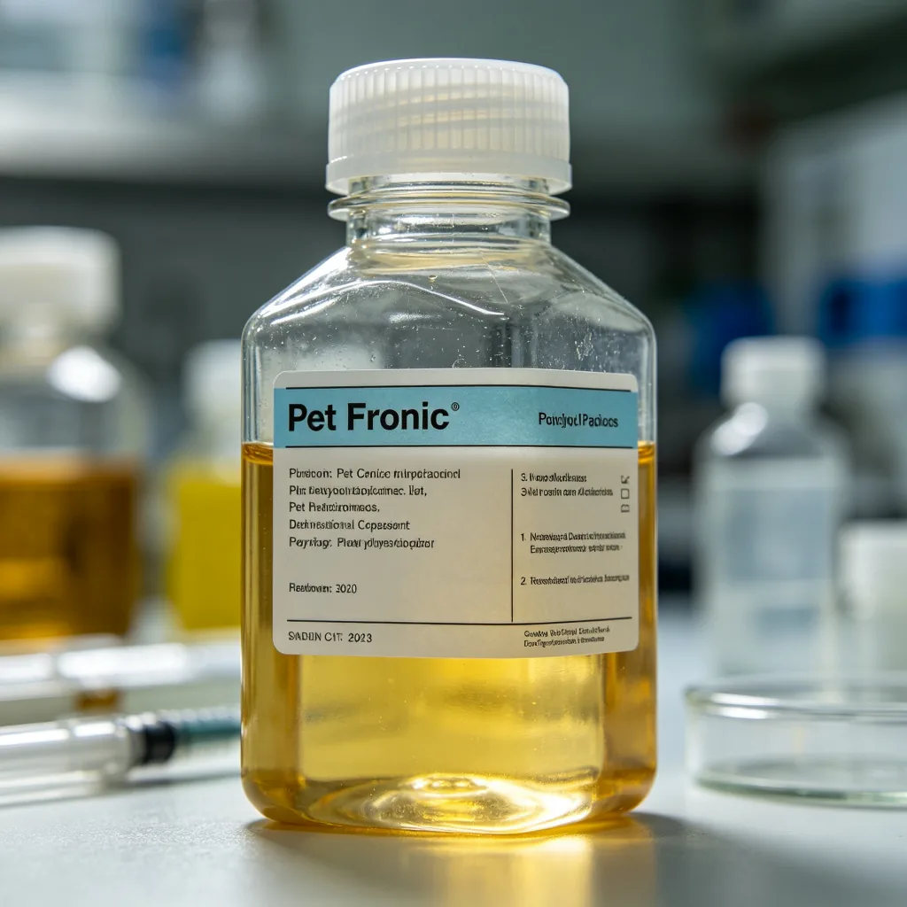
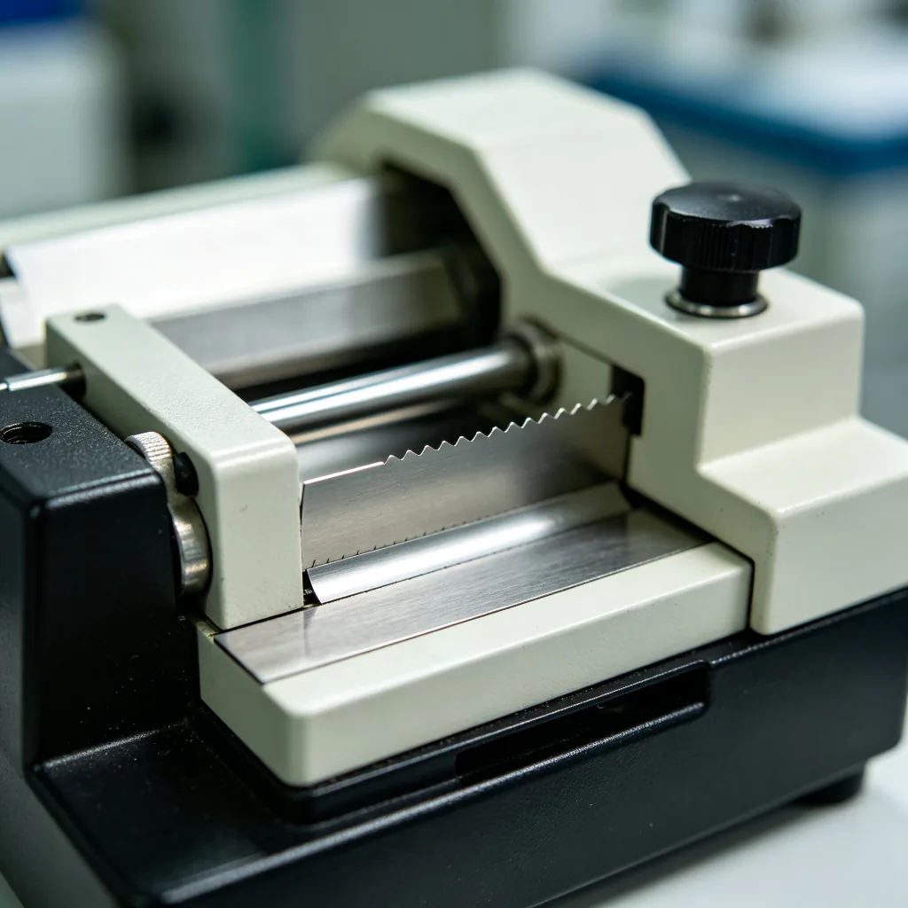
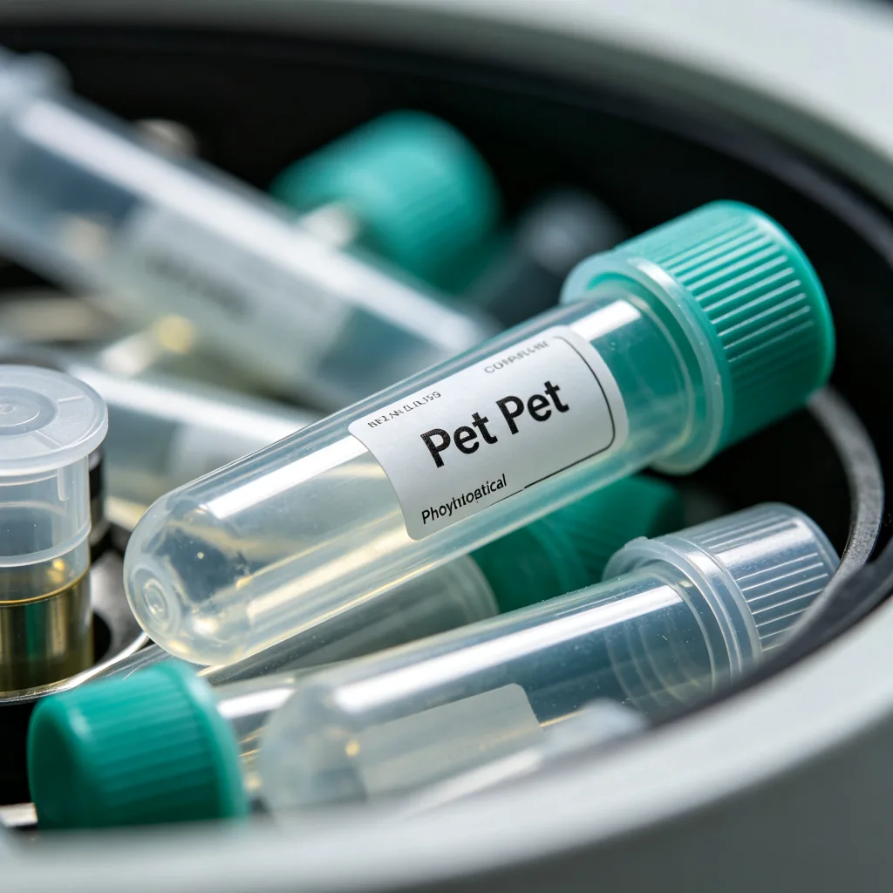
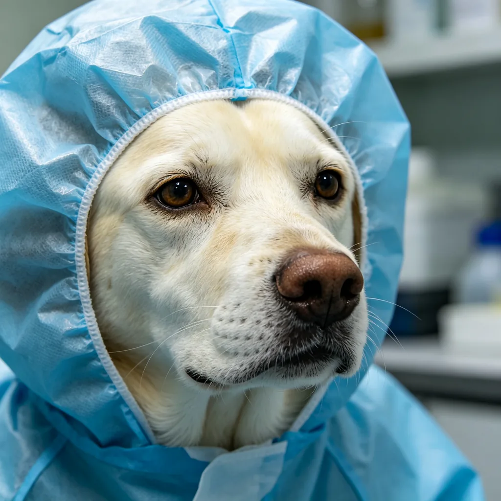
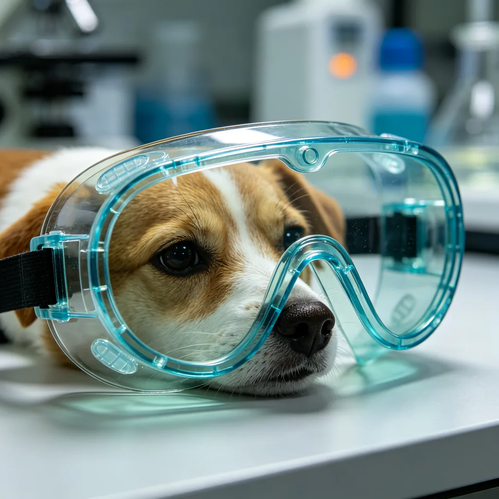
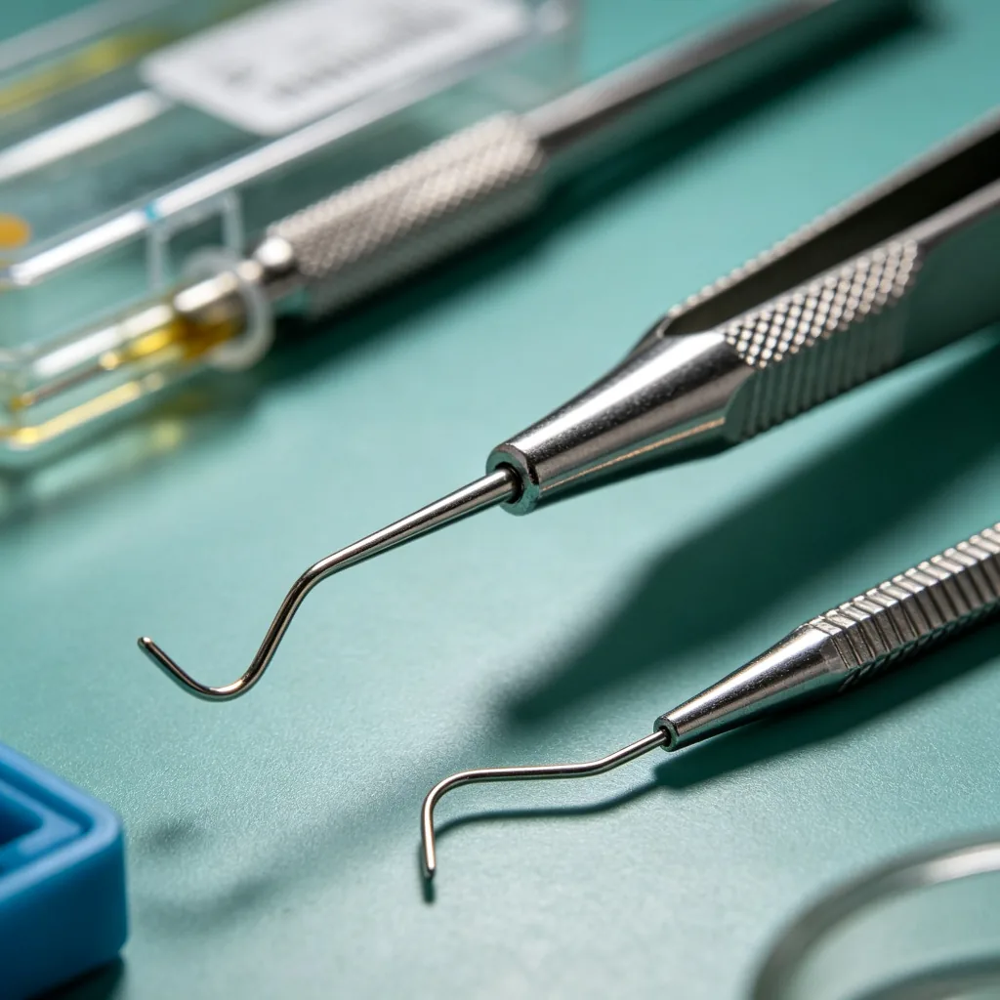
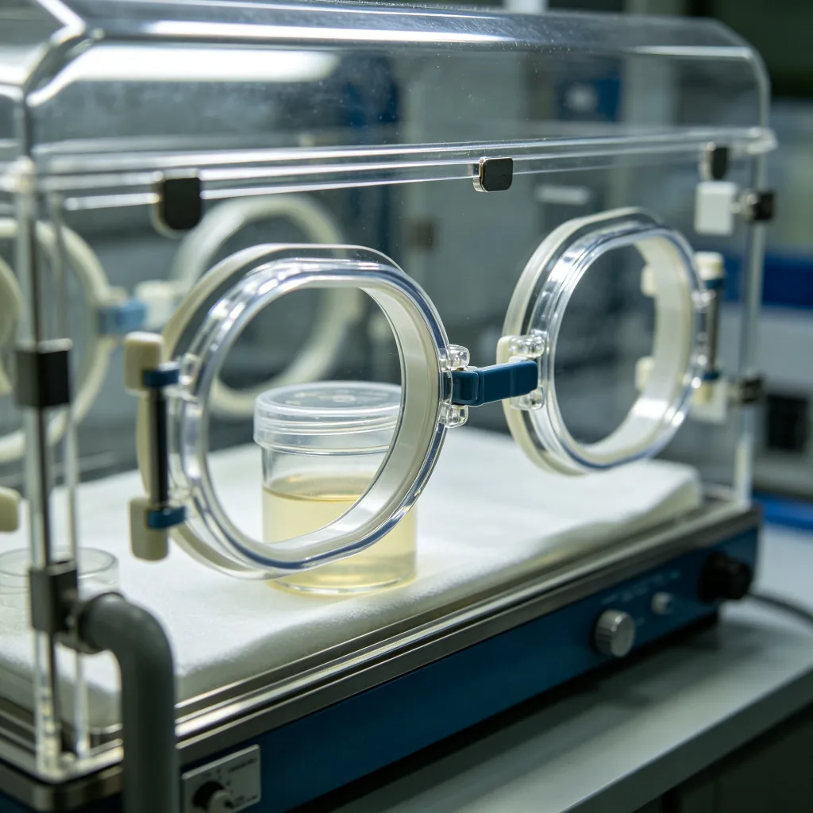
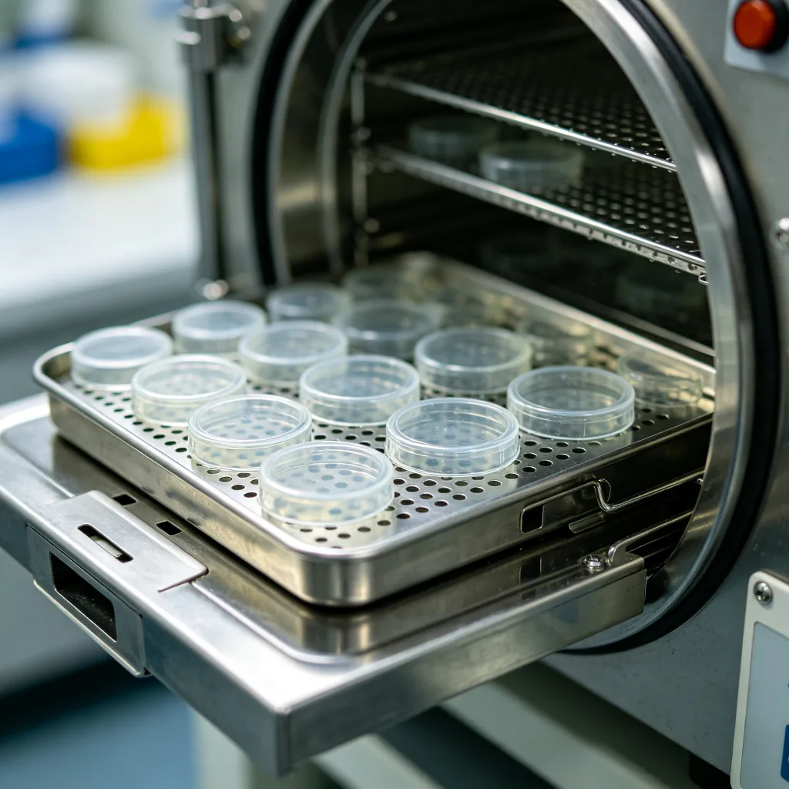
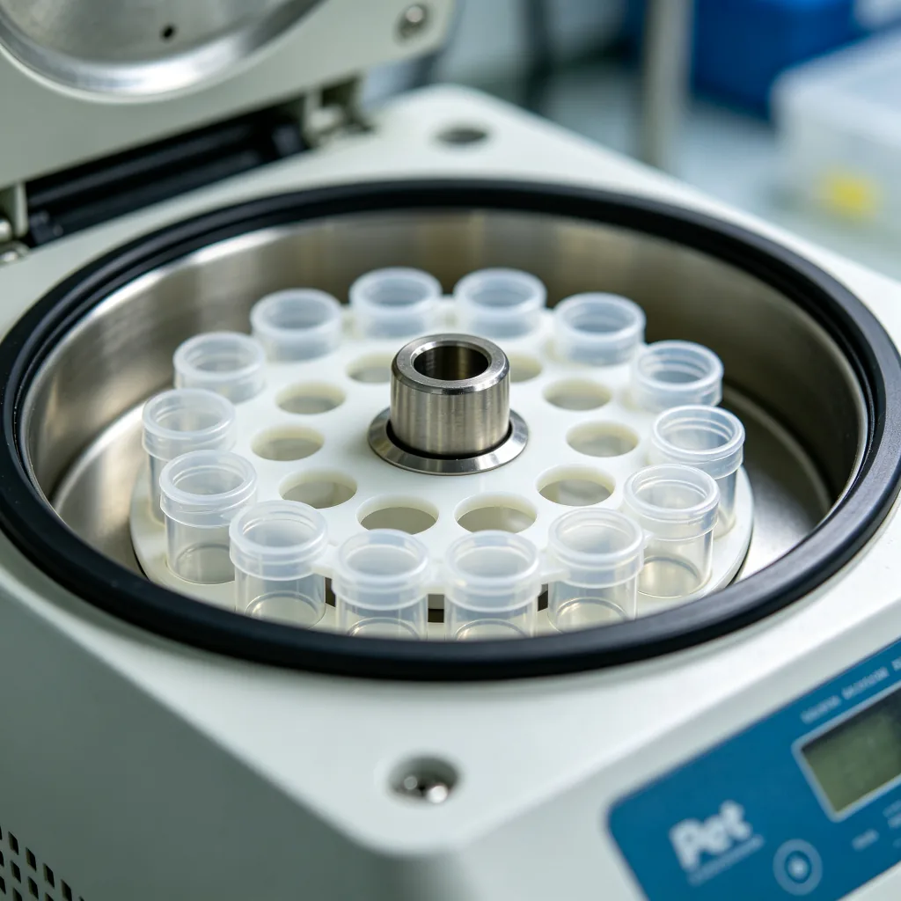

狗狗日記
狗狗洗澡頻率與正確方法完全指南
狗狗多久洗一次澡才合適？本文介紹不同品種與皮膚狀況的洗澡頻率、狗狗專用洗毛精選擇、正確洗澡步驟、耳朵與眼睛保護、吹乾與毛髮護理，以及皮膚敏感狗狗的特別注意事項。
狗狗日記
狗狗毛髮護理與美容完全指南
狗狗毛髮健康反映整體健康狀態。本文介紹不同毛質（短毛、長毛、捲毛、剛毛）的護理要點、梳毛頻率與工具、脫毛季的特別護理、美容造型選擇、皮膚與毛髮的營養補充，以及常見皮膚問題。
狗狗日記
狗狗牽繩與胸背帶選擇完全指南
牽繩與胸背帶是遛狗必備，但款式百百種。本文介紹頸圈、胸背帶、牽繩的種類與功能、不同品種與個性的適合款式、正確穿戴方法、材質與耐用性、安全設計，以及常見穿戴錯誤。

狗狗日記
狗狗玩具種類與安全選擇完全指南
玩具是狗狗的精神食糧，但不安全的玩具可能造成傷害。本文介紹狗狗玩具的類型（咀嚼玩具、益智玩具、拉扯玩具、發聲玩具、球類）、不同品種與咀嚼力的適合玩具、材質安全標準、玩具尺寸原則、定...